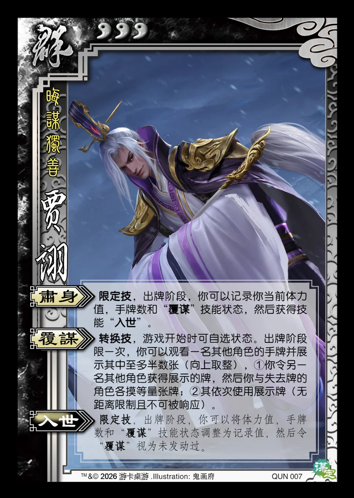

点击卡面查看大图
群
谋贾诩
♥3晦谋独善
肃身限定技
限定技，出牌阶段，你可以记录你当前体力值，手牌数和“覆谋”技能状态，然后获得技能“入世”。
覆谋转换技
转换技，游戏开始时可自选状态。出牌阶段限一次，你可以观看一名其他角色的手牌并展示其中至多半数张（向上取整），①你令另一名其他角色获得展示的牌，然后你与失去牌的角色各摸等量张牌；②其依次使用展示牌（无距离限制且不可被响应）。
入世限定技衍生
限定技，出牌阶段，你可以将体力值，手牌数和“覆谋”技能状态调整为记录值，然后令“覆谋”视为未发动过。